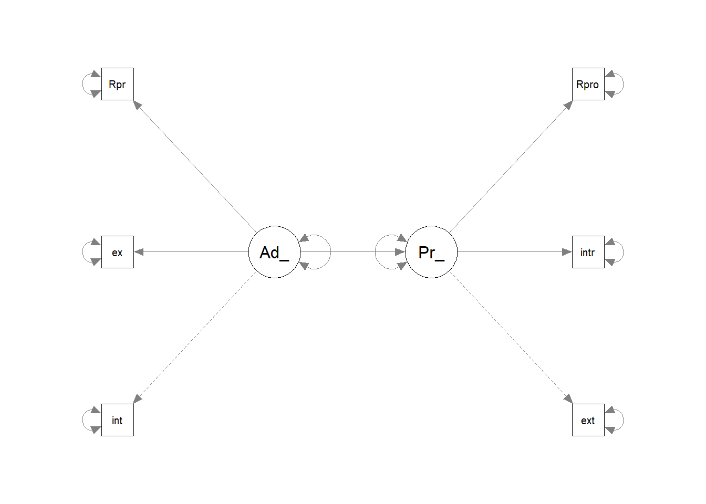

Portfolio 6
library(tidyverse)
library(dplyr)
library(haven)
teen_survey<- read_sav("teen_survey.sav")
tss<- read_sav("tss.sav")library(lme4)## Loading required package: Matrix##
## Attaching package: 'Matrix'## The following objects are masked from 'package:tidyr':
##
## expand, pack, unpacklibrary(merTools)## Loading required package: arm## Loading required package: MASS##
## Attaching package: 'MASS'## The following object is masked from 'package:dplyr':
##
## select##
## arm (Version 1.13-1, built: 2022-8-25)## Working directory is C:/Users/zheqi/OneDrive/Documents/portifolio##
## Attaching package: 'arm'## The following object is masked from 'package:lessR':
##
## rescale## The following objects are masked from 'package:psych':
##
## logit, rescale, sim##
## Attaching package: 'merTools'## The following object is masked from 'package:psych':
##
## ICClibrary(semPlot)
library(lavaan)
library(readxl)
library(dplyr)
library(haven)model1<-lmer(ex~1+(1|exter),REML = FALSE, data=tss)
summary(model1)## Linear mixed model fit by maximum likelihood ['lmerMod']
## Formula: ex ~ 1 + (1 | exter)
## Data: tss
##
## AIC BIC logLik deviance df.resid
## 364.8 374.0 -179.4 358.8 156
##
## Scaled residuals:
## Min 1Q Median 3Q Max
## -2.0350 -0.4304 -0.2328 0.4761 3.2214
##
## Random effects:
## Groups Name Variance Std.Dev.
## exter (Intercept) 0.5116 0.7153
## Residual 0.3503 0.5919
## Number of obs: 159, groups: exter, 50
##
## Fixed effects:
## Estimate Std. Error t value
## (Intercept) 2.1347 0.1179 18.11confint(model1)## Computing profile confidence intervals ...## 2.5 % 97.5 %
## .sig01 0.5237991 0.9522256
## .sigma 0.5193724 0.6832228
## (Intercept) 1.9013739 2.3761772ICC(outcome = "ex", group="exter",data=tss)## [1] 0.6017407#add level 1 predictor
model2<-lmer(ex~1+Gender+(1|exter), REML= FALSE, data= tss)
summary(model2)## Linear mixed model fit by maximum likelihood ['lmerMod']
## Formula: ex ~ 1 + Gender + (1 | exter)
## Data: tss
##
## AIC BIC logLik deviance df.resid
## 365.4 377.6 -178.7 357.4 155
##
## Scaled residuals:
## Min 1Q Median 3Q Max
## -2.0164 -0.4350 -0.2119 0.4224 3.2329
##
## Random effects:
## Groups Name Variance Std.Dev.
## exter (Intercept) 0.4874 0.6982
## Residual 0.3513 0.5927
## Number of obs: 159, groups: exter, 50
##
## Fixed effects:
## Estimate Std. Error t value
## (Intercept) 1.9206 0.2102 9.138
## Gender 0.1540 0.1272 1.211
##
## Correlation of Fixed Effects:
## (Intr)
## Gender -0.835anova(model1, model2)## Data: tss
## Models:
## model1: ex ~ 1 + (1 | exter)
## model2: ex ~ 1 + Gender + (1 | exter)
## npar AIC BIC logLik deviance Chisq Df Pr(>Chisq)
## model1 3 364.80 374.00 -179.40 358.80
## model2 4 365.36 377.63 -178.68 357.36 1.4387 1 0.2304confint(model2)## Computing profile confidence intervals ...## 2.5 % 97.5 %
## .sig01 0.50384040 0.9352752
## .sigma 0.51968283 0.6849186
## (Intercept) 1.50168680 2.3438094
## Gender -0.09814078 0.4090035model3<-lmer(ex~1+Gender+(1|exter)+country, REML= FALSE, data= tss)
summary(model3)## Linear mixed model fit by maximum likelihood ['lmerMod']
## Formula: ex ~ 1 + Gender + (1 | exter) + country
## Data: tss
##
## AIC BIC logLik deviance df.resid
## 364.6 379.9 -177.3 354.6 154
##
## Scaled residuals:
## Min 1Q Median 3Q Max
## -1.9886 -0.4410 -0.2487 0.4574 3.2441
##
## Random effects:
## Groups Name Variance Std.Dev.
## exter (Intercept) 0.4416 0.6645
## Residual 0.3535 0.5946
## Number of obs: 159, groups: exter, 50
##
## Fixed effects:
## Estimate Std. Error t value
## (Intercept) 2.16573 0.25660 8.440
## Gender 0.08067 0.13498 0.598
## country -0.22994 0.13590 -1.692
##
## Correlation of Fixed Effects:
## (Intr) Gender
## Gender -0.842
## country -0.589 0.344anova(model2, model3)## Data: tss
## Models:
## model2: ex ~ 1 + Gender + (1 | exter)
## model3: ex ~ 1 + Gender + (1 | exter) + country
## npar AIC BIC logLik deviance Chisq Df Pr(>Chisq)
## model2 4 365.36 377.63 -178.68 357.36
## model3 5 364.60 379.94 -177.30 354.60 2.7587 1 0.09672 .
## ---
## Signif. codes: 0 '***' 0.001 '**' 0.01 '*' 0.05 '.' 0.1 ' ' 1confint(model3)## Computing profile confidence intervals ...## 2.5 % 97.5 %
## .sig01 0.4669502 0.90105804
## .sigma 0.5206961 0.68818660
## (Intercept) 1.6595556 2.67233309
## Gender -0.1857943 0.34868353
## country -0.5062512 0.04155505#does not think it make any sense statistically.model<-"Parents_expectations=~exter +inter+Rpro
Adolescents_behaviors=~int+ex+Rpr
Parents_expectations~Adolescents_behaviors"
#residual correlations
exter~~inter## exter ~ ~interinter~~Rpro## inter ~ ~Rproexter~~Rpro## exter ~ ~Rproint~~ex## int ~ ~exRpr~~ex## Rpr ~ ~exRpr~~int## Rpr ~ ~intlibrary(lavaan)
library(readxl)
library(dplyr)
library(haven)
fit<- sem(model, data=teen_survey)
summary(fit, standardized=TRUE, ci=TRUE, fit.measures=TRUE)## lavaan 0.6.14 ended normally after 34 iterations
##
## Estimator ML
## Optimization method NLMINB
## Number of model parameters 13
##
## Used Total
## Number of observations 209 234
##
## Model Test User Model:
##
## Test statistic 85.723
## Degrees of freedom 8
## P-value (Chi-square) 0.000
##
## Model Test Baseline Model:
##
## Test statistic 371.267
## Degrees of freedom 15
## P-value 0.000
##
## User Model versus Baseline Model:
##
## Comparative Fit Index (CFI) 0.782
## Tucker-Lewis Index (TLI) 0.591
##
## Loglikelihood and Information Criteria:
##
## Loglikelihood user model (H0) -1738.050
## Loglikelihood unrestricted model (H1) -1695.188
##
## Akaike (AIC) 3502.100
## Bayesian (BIC) 3545.550
## Sample-size adjusted Bayesian (SABIC) 3504.359
##
## Root Mean Square Error of Approximation:
##
## RMSEA 0.216
## 90 Percent confidence interval - lower 0.176
## 90 Percent confidence interval - upper 0.258
## P-value H_0: RMSEA <= 0.050 0.000
## P-value H_0: RMSEA >= 0.080 1.000
##
## Standardized Root Mean Square Residual:
##
## SRMR 0.090
##
## Parameter Estimates:
##
## Standard errors Standard
## Information Expected
## Information saturated (h1) model Structured
##
## Latent Variables:
## Estimate Std.Err z-value P(>|z|) ci.lower
## Parents_expectations =~
## exter 1.000 1.000
## inter 1.114 0.109 10.241 0.000 0.901
## Rpro -0.097 0.101 -0.961 0.337 -0.296
## Adolescents_behaviors =~
## int 1.000 1.000
## ex 1.144 0.145 7.873 0.000 0.859
## Rpr -0.417 0.173 -2.418 0.016 -0.756
## ci.upper Std.lv Std.all
##
## 1.000 0.973 0.762
## 1.327 1.084 0.770
## 0.101 -0.095 -0.072
##
## 1.000 0.473 0.593
## 1.428 0.540 0.687
## -0.079 -0.197 -0.179
##
## Regressions:
## Estimate Std.Err z-value P(>|z|) ci.lower ci.upper
## Parents_expectations ~
## Adlscnts_bhvrs 2.246 0.332 6.764 0.000 1.595 2.896
## Std.lv Std.all
##
## 1.091 1.091
##
## Variances:
## Estimate Std.Err z-value P(>|z|) ci.lower ci.upper
## .exter 0.685 0.095 7.175 0.000 0.498 0.872
## .inter 0.807 0.115 6.985 0.000 0.580 1.033
## .Rpro 1.701 0.167 10.212 0.000 1.375 2.028
## .int 0.413 0.047 8.827 0.000 0.321 0.504
## .ex 0.327 0.044 7.384 0.000 0.240 0.414
## .Rpr 1.175 0.115 10.181 0.000 0.948 1.401
## .Parnts_xpcttns -0.179 0.124 -1.442 0.149 -0.423 0.065
## Adlscnts_bhvrs 0.223 0.053 4.222 0.000 0.120 0.327
## Std.lv Std.all
## 0.685 0.420
## 0.807 0.407
## 1.701 0.995
## 0.413 0.649
## 0.327 0.528
## 1.175 0.968
## -0.190 -0.190
## 1.000 1.000modindices(fit, sort.=TRUE)## lhs op rhs mi epc sepc.lv sepc.all sepc.nox
## 25 exter ~~ ex 53.777 0.530 0.530 1.120 1.120
## 29 inter ~~ ex 47.920 -0.557 -0.557 -1.084 -1.084
## 24 exter ~~ int 47.267 -0.439 -0.439 -0.826 -0.826
## 28 inter ~~ int 46.179 0.483 0.483 0.836 0.836
## 33 Rpro ~~ Rpr 20.939 0.449 0.449 0.318 0.318
## 17 Parents_expectations =~ ex 2.463 -2.713 -2.640 -3.355 -3.355
## 35 int ~~ Rpr 2.462 -0.079 -0.079 -0.114 -0.114
## 26 exter ~~ Rpr 1.375 0.089 0.089 0.100 0.100
## 23 exter ~~ Rpro 0.914 0.083 0.083 0.077 0.077
## 20 Adolescents_behaviors =~ inter 0.913 11.905 5.626 3.997 3.997
## 27 inter ~~ Rpro 0.790 -0.085 -0.085 -0.072 -0.072
## 19 Adolescents_behaviors =~ exter 0.790 -9.780 -4.622 -3.618 -3.618
## 31 Rpro ~~ int 0.512 0.044 0.044 0.052 0.052
## 34 int ~~ ex 0.407 -0.059 -0.059 -0.160 -0.160
## 18 Parents_expectations =~ Rpr 0.407 -0.269 -0.262 -0.238 -0.238
## 16 Parents_expectations =~ int 0.245 0.603 0.586 0.735 0.735
## 36 ex ~~ Rpr 0.245 0.023 0.023 0.037 0.037
## 32 Rpro ~~ ex 0.105 0.018 0.018 0.024 0.024
## 30 inter ~~ Rpr 0.033 -0.015 -0.015 -0.016 -0.016
## 22 exter ~~ inter 0.002 0.041 0.041 0.055 0.055
## 21 Adolescents_behaviors =~ Rpro 0.002 0.045 0.021 0.016 0.016inspect(fit, what="std")## $lambda
## Prnts_ Adlsc_
## exter 0.762 0.000
## inter 0.770 0.000
## Rpro -0.072 0.000
## int 0.000 0.593
## ex 0.000 0.687
## Rpr 0.000 -0.179
##
## $theta
## exter inter Rpro int ex Rpr
## exter 0.420
## inter 0.000 0.407
## Rpro 0.000 0.000 0.995
## int 0.000 0.000 0.000 0.649
## ex 0.000 0.000 0.000 0.000 0.528
## Rpr 0.000 0.000 0.000 0.000 0.000 0.968
##
## $psi
## Prnts_ Adlsc_
## Parents_expectations -0.19
## Adolescents_behaviors 0.00 1.00
##
## $beta
## Prnts_ Adlsc_
## Parents_expectations 0 1.091
## Adolescents_behaviors 0 0.000fitmeasures(fit)## npar fmin chisq
## 13.000 0.205 85.723
## df pvalue baseline.chisq
## 8.000 0.000 371.267
## baseline.df baseline.pvalue cfi
## 15.000 0.000 0.782
## tli nnfi rfi
## 0.591 0.591 0.567
## nfi pnfi ifi
## 0.769 0.410 0.786
## rni logl unrestricted.logl
## 0.782 -1738.050 -1695.188
## aic bic ntotal
## 3502.100 3545.550 209.000
## bic2 rmsea rmsea.ci.lower
## 3504.359 0.216 0.176
## rmsea.ci.upper rmsea.ci.level rmsea.pvalue
## 0.258 0.900 0.000
## rmsea.close.h0 rmsea.notclose.pvalue rmsea.notclose.h0
## 0.050 1.000 0.080
## rmr rmr_nomean srmr
## 0.117 0.117 0.090
## srmr_bentler srmr_bentler_nomean crmr
## 0.090 0.090 0.106
## crmr_nomean srmr_mplus srmr_mplus_nomean
## 0.106 0.090 0.090
## cn_05 cn_01 gfi
## 38.808 49.982 0.891
## agfi pgfi mfi
## 0.714 0.339 0.830
## ecvi
## 0.535parameterestimates(fit, standardized = TRUE)## lhs op rhs est se z pvalue
## 1 Parents_expectations =~ exter 1.000 0.000 NA NA
## 2 Parents_expectations =~ inter 1.114 0.109 10.241 0.000
## 3 Parents_expectations =~ Rpro -0.097 0.101 -0.961 0.337
## 4 Adolescents_behaviors =~ int 1.000 0.000 NA NA
## 5 Adolescents_behaviors =~ ex 1.144 0.145 7.873 0.000
## 6 Adolescents_behaviors =~ Rpr -0.417 0.173 -2.418 0.016
## 7 Parents_expectations ~ Adolescents_behaviors 2.246 0.332 6.764 0.000
## 8 exter ~~ exter 0.685 0.095 7.175 0.000
## 9 inter ~~ inter 0.807 0.115 6.985 0.000
## 10 Rpro ~~ Rpro 1.701 0.167 10.212 0.000
## 11 int ~~ int 0.413 0.047 8.827 0.000
## 12 ex ~~ ex 0.327 0.044 7.384 0.000
## 13 Rpr ~~ Rpr 1.175 0.115 10.181 0.000
## 14 Parents_expectations ~~ Parents_expectations -0.179 0.124 -1.442 0.149
## 15 Adolescents_behaviors ~~ Adolescents_behaviors 0.223 0.053 4.222 0.000
## ci.lower ci.upper std.lv std.all std.nox
## 1 1.000 1.000 0.973 0.762 0.762
## 2 0.901 1.327 1.084 0.770 0.770
## 3 -0.296 0.101 -0.095 -0.072 -0.072
## 4 1.000 1.000 0.473 0.593 0.593
## 5 0.859 1.428 0.540 0.687 0.687
## 6 -0.756 -0.079 -0.197 -0.179 -0.179
## 7 1.595 2.896 1.091 1.091 1.091
## 8 0.498 0.872 0.685 0.420 0.420
## 9 0.580 1.033 0.807 0.407 0.407
## 10 1.375 2.028 1.701 0.995 0.995
## 11 0.321 0.504 0.413 0.649 0.649
## 12 0.240 0.414 0.327 0.528 0.528
## 13 0.948 1.401 1.175 0.968 0.968
## 14 -0.423 0.065 -0.190 -0.190 -0.190
## 15 0.120 0.327 1.000 1.000 1.000fitted(fit)## $cov
## exter inter Rpro int ex Rpr
## exter 1.631
## inter 1.054 1.981
## Rpro -0.092 -0.103 1.710
## int 0.501 0.558 -0.049 0.636
## ex 0.573 0.639 -0.056 0.255 0.619
## Rpr -0.209 -0.233 0.020 -0.093 -0.107 1.213residuals(fit)## $type
## [1] "raw"
##
## $cov
## exter inter Rpro int ex Rpr
## exter 0.000
## inter 0.000 0.000
## Rpro 0.061 -0.061 0.000
## int -0.145 0.154 0.040 0.000
## ex 0.107 -0.110 0.016 -0.004 0.000
## Rpr 0.051 -0.019 0.446 -0.072 0.020 0.000fitmeasures(fit)## npar fmin chisq
## 13.000 0.205 85.723
## df pvalue baseline.chisq
## 8.000 0.000 371.267
## baseline.df baseline.pvalue cfi
## 15.000 0.000 0.782
## tli nnfi rfi
## 0.591 0.591 0.567
## nfi pnfi ifi
## 0.769 0.410 0.786
## rni logl unrestricted.logl
## 0.782 -1738.050 -1695.188
## aic bic ntotal
## 3502.100 3545.550 209.000
## bic2 rmsea rmsea.ci.lower
## 3504.359 0.216 0.176
## rmsea.ci.upper rmsea.ci.level rmsea.pvalue
## 0.258 0.900 0.000
## rmsea.close.h0 rmsea.notclose.pvalue rmsea.notclose.h0
## 0.050 1.000 0.080
## rmr rmr_nomean srmr
## 0.117 0.117 0.090
## srmr_bentler srmr_bentler_nomean crmr
## 0.090 0.090 0.106
## crmr_nomean srmr_mplus srmr_mplus_nomean
## 0.106 0.090 0.090
## cn_05 cn_01 gfi
## 38.808 49.982 0.891
## agfi pgfi mfi
## 0.714 0.339 0.830
## ecvi
## 0.535modificationindices(fit, sort. = TRUE)## lhs op rhs mi epc sepc.lv sepc.all sepc.nox
## 25 exter ~~ ex 53.777 0.530 0.530 1.120 1.120
## 29 inter ~~ ex 47.920 -0.557 -0.557 -1.084 -1.084
## 24 exter ~~ int 47.267 -0.439 -0.439 -0.826 -0.826
## 28 inter ~~ int 46.179 0.483 0.483 0.836 0.836
## 33 Rpro ~~ Rpr 20.939 0.449 0.449 0.318 0.318
## 17 Parents_expectations =~ ex 2.463 -2.713 -2.640 -3.355 -3.355
## 35 int ~~ Rpr 2.462 -0.079 -0.079 -0.114 -0.114
## 26 exter ~~ Rpr 1.375 0.089 0.089 0.100 0.100
## 23 exter ~~ Rpro 0.914 0.083 0.083 0.077 0.077
## 20 Adolescents_behaviors =~ inter 0.913 11.905 5.626 3.997 3.997
## 27 inter ~~ Rpro 0.790 -0.085 -0.085 -0.072 -0.072
## 19 Adolescents_behaviors =~ exter 0.790 -9.780 -4.622 -3.618 -3.618
## 31 Rpro ~~ int 0.512 0.044 0.044 0.052 0.052
## 34 int ~~ ex 0.407 -0.059 -0.059 -0.160 -0.160
## 18 Parents_expectations =~ Rpr 0.407 -0.269 -0.262 -0.238 -0.238
## 16 Parents_expectations =~ int 0.245 0.603 0.586 0.735 0.735
## 36 ex ~~ Rpr 0.245 0.023 0.023 0.037 0.037
## 32 Rpro ~~ ex 0.105 0.018 0.018 0.024 0.024
## 30 inter ~~ Rpr 0.033 -0.015 -0.015 -0.016 -0.016
## 22 exter ~~ inter 0.002 0.041 0.041 0.055 0.055
## 21 Adolescents_behaviors =~ Rpro 0.002 0.045 0.021 0.016 0.016semPaths(fit, what="paths", whatLables="par", rotation=2)
fitmeasures(fit)## npar fmin chisq
## 13.000 0.205 85.723
## df pvalue baseline.chisq
## 8.000 0.000 371.267
## baseline.df baseline.pvalue cfi
## 15.000 0.000 0.782
## tli nnfi rfi
## 0.591 0.591 0.567
## nfi pnfi ifi
## 0.769 0.410 0.786
## rni logl unrestricted.logl
## 0.782 -1738.050 -1695.188
## aic bic ntotal
## 3502.100 3545.550 209.000
## bic2 rmsea rmsea.ci.lower
## 3504.359 0.216 0.176
## rmsea.ci.upper rmsea.ci.level rmsea.pvalue
## 0.258 0.900 0.000
## rmsea.close.h0 rmsea.notclose.pvalue rmsea.notclose.h0
## 0.050 1.000 0.080
## rmr rmr_nomean srmr
## 0.117 0.117 0.090
## srmr_bentler srmr_bentler_nomean crmr
## 0.090 0.090 0.106
## crmr_nomean srmr_mplus srmr_mplus_nomean
## 0.106 0.090 0.090
## cn_05 cn_01 gfi
## 38.808 49.982 0.891
## agfi pgfi mfi
## 0.714 0.339 0.830
## ecvi
## 0.535#not a good fit.model2<-"Parents_expectations=~exter +inter+ pros+ stem
Adolescents_behaviors=~int+ex+pr+st
Parents_expectations~Adolescents_behaviors"
#residual correlations
exter~~inter## exter ~ ~interpros~~stem## pros ~ ~stemint~~ex## int ~ ~expr~~int## pr ~ ~intpr~~ex## pr ~ ~exst~~pr## st ~ ~prst~~ex## st ~ ~exst~~int## st ~ ~intlibrary(lavaan)
library(readxl)
library(dplyr)
library(haven)
fit2<- sem(model2, data=teen_survey)
summary(fit2, standardized=TRUE, ci=TRUE, fit.measures=TRUE)## lavaan 0.6.14 ended normally after 38 iterations
##
## Estimator ML
## Optimization method NLMINB
## Number of model parameters 17
##
## Used Total
## Number of observations 209 234
##
## Model Test User Model:
##
## Test statistic 288.835
## Degrees of freedom 19
## P-value (Chi-square) 0.000
##
## Model Test Baseline Model:
##
## Test statistic 587.554
## Degrees of freedom 28
## P-value 0.000
##
## User Model versus Baseline Model:
##
## Comparative Fit Index (CFI) 0.518
## Tucker-Lewis Index (TLI) 0.289
##
## Loglikelihood and Information Criteria:
##
## Loglikelihood user model (H0) -2505.911
## Loglikelihood unrestricted model (H1) -2361.493
##
## Akaike (AIC) 5045.821
## Bayesian (BIC) 5102.641
## Sample-size adjusted Bayesian (SABIC) 5048.776
##
## Root Mean Square Error of Approximation:
##
## RMSEA 0.261
## 90 Percent confidence interval - lower 0.235
## 90 Percent confidence interval - upper 0.288
## P-value H_0: RMSEA <= 0.050 0.000
## P-value H_0: RMSEA >= 0.080 1.000
##
## Standardized Root Mean Square Residual:
##
## SRMR 0.150
##
## Parameter Estimates:
##
## Standard errors Standard
## Information Expected
## Information saturated (h1) model Structured
##
## Latent Variables:
## Estimate Std.Err z-value P(>|z|) ci.lower
## Parents_expectations =~
## exter 1.000 1.000
## inter 1.019 0.100 10.184 0.000 0.823
## pros 0.112 0.097 1.157 0.247 -0.078
## stem 0.348 0.113 3.094 0.002 0.128
## Adolescents_behaviors =~
## int 1.000 1.000
## ex 1.268 0.169 7.503 0.000 0.937
## pr 0.450 0.187 2.413 0.016 0.085
## st 0.741 0.267 2.779 0.005 0.218
## ci.upper Std.lv Std.all
##
## 1.000 1.014 0.794
## 1.215 1.034 0.735
## 0.303 0.114 0.087
## 0.569 0.353 0.232
##
## 1.000 0.441 0.553
## 1.599 0.560 0.711
## 0.816 0.199 0.180
## 1.264 0.327 0.209
##
## Regressions:
## Estimate Std.Err z-value P(>|z|) ci.lower ci.upper
## Parents_expectations ~
## Adlscnts_bhvrs 2.483 0.373 6.659 0.000 1.752 3.213
## Std.lv Std.all
##
## 1.080 1.080
##
## Variances:
## Estimate Std.Err z-value P(>|z|) ci.lower ci.upper
## .exter 0.603 0.094 6.432 0.000 0.419 0.786
## .inter 0.912 0.117 7.770 0.000 0.682 1.142
## .pros 1.697 0.166 10.208 0.000 1.371 2.023
## .stem 2.197 0.217 10.114 0.000 1.771 2.623
## .int 0.441 0.048 9.215 0.000 0.347 0.535
## .ex 0.306 0.044 6.937 0.000 0.219 0.392
## .pr 1.174 0.115 10.178 0.000 0.948 1.400
## .st 2.335 0.230 10.161 0.000 1.885 2.786
## .Parnts_xpcttns -0.172 0.130 -1.325 0.185 -0.426 0.082
## Adlscnts_bhvrs 0.195 0.049 3.946 0.000 0.098 0.292
## Std.lv Std.all
## 0.603 0.369
## 0.912 0.460
## 1.697 0.992
## 2.197 0.946
## 0.441 0.694
## 0.306 0.494
## 1.174 0.967
## 2.335 0.956
## -0.167 -0.167
## 1.000 1.000modindices(fit2, sort.=TRUE)## lhs op rhs mi epc sepc.lv sepc.all sepc.nox
## 49 stem ~~ st 120.151 1.736 1.736 0.767 0.767
## 37 inter ~~ int 55.236 0.483 0.483 0.761 0.761
## 31 exter ~~ int 39.594 -0.391 -0.391 -0.759 -0.759
## 32 exter ~~ ex 30.210 0.409 0.409 0.952 0.952
## 38 inter ~~ ex 29.612 -0.415 -0.415 -0.786 -0.786
## 44 pros ~~ pr 20.716 0.446 0.446 0.316 0.316
## 46 stem ~~ int 9.380 -0.220 -0.220 -0.223 -0.223
## 41 pros ~~ stem 9.329 0.410 0.410 0.213 0.213
## 40 inter ~~ st 7.289 -0.323 -0.323 -0.221 -0.221
## 36 inter ~~ stem 5.715 -0.268 -0.268 -0.190 -0.190
## 45 pros ~~ st 4.503 0.294 0.294 0.147 0.147
## 52 int ~~ st 3.711 -0.141 -0.141 -0.139 -0.139
## 24 Adolescents_behaviors =~ exter 3.136 7.603 3.356 2.627 2.627
## 51 int ~~ pr 2.627 0.084 0.084 0.116 0.116
## 30 exter ~~ stem 2.550 0.157 0.157 0.137 0.137
## 29 exter ~~ pros 2.151 -0.125 -0.125 -0.123 -0.123
## 33 exter ~~ pr 2.014 -0.106 -0.106 -0.126 -0.126
## 48 stem ~~ pr 1.559 0.140 0.140 0.087 0.087
## 25 Adolescents_behaviors =~ inter 1.497 -4.797 -2.117 -1.505 -1.505
## 23 Parents_expectations =~ st 0.670 -0.528 -0.535 -0.342 -0.342
## 42 pros ~~ int 0.574 -0.047 -0.047 -0.055 -0.055
## 53 ex ~~ pr 0.414 -0.029 -0.029 -0.049 -0.049
## 35 inter ~~ pros 0.368 0.059 0.059 0.048 0.048
## 43 pros ~~ ex 0.353 -0.033 -0.033 -0.045 -0.045
## 28 exter ~~ inter 0.319 0.145 0.145 0.195 0.195
## 34 exter ~~ st 0.237 0.052 0.052 0.044 0.044
## 54 ex ~~ st 0.224 0.031 0.031 0.036 0.036
## 21 Parents_expectations =~ ex 0.224 0.646 0.656 0.833 0.833
## 39 inter ~~ pr 0.192 0.037 0.037 0.036 0.036
## 47 stem ~~ ex 0.137 -0.024 -0.024 -0.029 -0.029
## 50 int ~~ ex 0.132 0.022 0.022 0.060 0.060
## 22 Parents_expectations =~ pr 0.123 0.157 0.160 0.145 0.145
## 55 pr ~~ st 0.109 -0.038 -0.038 -0.023 -0.023
## 27 Adolescents_behaviors =~ stem 0.074 -0.365 -0.161 -0.106 -0.106
## 26 Adolescents_behaviors =~ pros 0.058 -0.276 -0.122 -0.093 -0.093
## 20 Parents_expectations =~ int 0.014 0.091 0.092 0.116 0.116inspect(fit2, what="std")## $lambda
## Prnts_ Adlsc_
## exter 0.794 0.000
## inter 0.735 0.000
## pros 0.087 0.000
## stem 0.232 0.000
## int 0.000 0.553
## ex 0.000 0.711
## pr 0.000 0.180
## st 0.000 0.209
##
## $theta
## exter inter pros stem int ex pr st
## exter 0.369
## inter 0.000 0.460
## pros 0.000 0.000 0.992
## stem 0.000 0.000 0.000 0.946
## int 0.000 0.000 0.000 0.000 0.694
## ex 0.000 0.000 0.000 0.000 0.000 0.494
## pr 0.000 0.000 0.000 0.000 0.000 0.000 0.967
## st 0.000 0.000 0.000 0.000 0.000 0.000 0.000 0.956
##
## $psi
## Prnts_ Adlsc_
## Parents_expectations -0.167
## Adolescents_behaviors 0.000 1.000
##
## $beta
## Prnts_ Adlsc_
## Parents_expectations 0 1.08
## Adolescents_behaviors 0 0.00fitmeasures(fit2)## npar fmin chisq
## 17.000 0.691 288.835
## df pvalue baseline.chisq
## 19.000 0.000 587.554
## baseline.df baseline.pvalue cfi
## 28.000 0.000 0.518
## tli nnfi rfi
## 0.289 0.289 0.276
## nfi pnfi ifi
## 0.508 0.345 0.525
## rni logl unrestricted.logl
## 0.518 -2505.911 -2361.493
## aic bic ntotal
## 5045.821 5102.641 209.000
## bic2 rmsea rmsea.ci.lower
## 5048.776 0.261 0.235
## rmsea.ci.upper rmsea.ci.level rmsea.pvalue
## 0.288 0.900 0.000
## rmsea.close.h0 rmsea.notclose.pvalue rmsea.notclose.h0
## 0.050 1.000 0.080
## rmr rmr_nomean srmr
## 0.316 0.316 0.150
## srmr_bentler srmr_bentler_nomean crmr
## 0.150 0.150 0.170
## crmr_nomean srmr_mplus srmr_mplus_nomean
## 0.170 0.150 0.150
## cn_05 cn_01 gfi
## 22.812 27.188 0.782
## agfi pgfi mfi
## 0.587 0.413 0.524
## ecvi
## 1.545parameterestimates(fit2, standardized = TRUE)## lhs op rhs est se z pvalue
## 1 Parents_expectations =~ exter 1.000 0.000 NA NA
## 2 Parents_expectations =~ inter 1.019 0.100 10.184 0.000
## 3 Parents_expectations =~ pros 0.112 0.097 1.157 0.247
## 4 Parents_expectations =~ stem 0.348 0.113 3.094 0.002
## 5 Adolescents_behaviors =~ int 1.000 0.000 NA NA
## 6 Adolescents_behaviors =~ ex 1.268 0.169 7.503 0.000
## 7 Adolescents_behaviors =~ pr 0.450 0.187 2.413 0.016
## 8 Adolescents_behaviors =~ st 0.741 0.267 2.779 0.005
## 9 Parents_expectations ~ Adolescents_behaviors 2.483 0.373 6.659 0.000
## 10 exter ~~ exter 0.603 0.094 6.432 0.000
## 11 inter ~~ inter 0.912 0.117 7.770 0.000
## 12 pros ~~ pros 1.697 0.166 10.208 0.000
## 13 stem ~~ stem 2.197 0.217 10.114 0.000
## 14 int ~~ int 0.441 0.048 9.215 0.000
## 15 ex ~~ ex 0.306 0.044 6.937 0.000
## 16 pr ~~ pr 1.174 0.115 10.178 0.000
## 17 st ~~ st 2.335 0.230 10.161 0.000
## 18 Parents_expectations ~~ Parents_expectations -0.172 0.130 -1.325 0.185
## 19 Adolescents_behaviors ~~ Adolescents_behaviors 0.195 0.049 3.946 0.000
## ci.lower ci.upper std.lv std.all std.nox
## 1 1.000 1.000 1.014 0.794 0.794
## 2 0.823 1.215 1.034 0.735 0.735
## 3 -0.078 0.303 0.114 0.087 0.087
## 4 0.128 0.569 0.353 0.232 0.232
## 5 1.000 1.000 0.441 0.553 0.553
## 6 0.937 1.599 0.560 0.711 0.711
## 7 0.085 0.816 0.199 0.180 0.180
## 8 0.218 1.264 0.327 0.209 0.209
## 9 1.752 3.213 1.080 1.080 1.080
## 10 0.419 0.786 0.603 0.369 0.369
## 11 0.682 1.142 0.912 0.460 0.460
## 12 1.371 2.023 1.697 0.992 0.992
## 13 1.771 2.623 2.197 0.946 0.946
## 14 0.347 0.535 0.441 0.694 0.694
## 15 0.219 0.392 0.306 0.494 0.494
## 16 0.948 1.400 1.174 0.967 0.967
## 17 1.885 2.786 2.335 0.956 0.956
## 18 -0.426 0.082 -0.167 -0.167 -0.167
## 19 0.098 0.292 1.000 1.000 1.000fitted(fit2)## $cov
## exter inter pros stem int ex pr st
## exter 1.631
## inter 1.049 1.981
## pros 0.116 0.118 1.710
## stem 0.358 0.365 0.040 2.322
## int 0.484 0.493 0.054 0.168 0.636
## ex 0.613 0.625 0.069 0.214 0.247 0.619
## pr 0.218 0.222 0.024 0.076 0.088 0.111 1.213
## st 0.358 0.365 0.040 0.125 0.144 0.183 0.065 2.442residuals(fit2)## $type
## [1] "raw"
##
## $cov
## exter inter pros stem int ex pr st
## exter 0.000
## inter 0.006 0.000
## pros -0.085 0.046 0.000
## stem 0.103 -0.204 0.405 0.000
## int -0.127 0.219 -0.045 -0.200 0.000
## ex 0.067 -0.096 -0.029 -0.021 0.004 0.000
## pr -0.059 0.030 0.442 0.138 0.078 -0.024 0.000
## st 0.017 -0.245 0.288 1.692 -0.130 0.025 -0.038 0.000fitmeasures(fit2)## npar fmin chisq
## 17.000 0.691 288.835
## df pvalue baseline.chisq
## 19.000 0.000 587.554
## baseline.df baseline.pvalue cfi
## 28.000 0.000 0.518
## tli nnfi rfi
## 0.289 0.289 0.276
## nfi pnfi ifi
## 0.508 0.345 0.525
## rni logl unrestricted.logl
## 0.518 -2505.911 -2361.493
## aic bic ntotal
## 5045.821 5102.641 209.000
## bic2 rmsea rmsea.ci.lower
## 5048.776 0.261 0.235
## rmsea.ci.upper rmsea.ci.level rmsea.pvalue
## 0.288 0.900 0.000
## rmsea.close.h0 rmsea.notclose.pvalue rmsea.notclose.h0
## 0.050 1.000 0.080
## rmr rmr_nomean srmr
## 0.316 0.316 0.150
## srmr_bentler srmr_bentler_nomean crmr
## 0.150 0.150 0.170
## crmr_nomean srmr_mplus srmr_mplus_nomean
## 0.170 0.150 0.150
## cn_05 cn_01 gfi
## 22.812 27.188 0.782
## agfi pgfi mfi
## 0.587 0.413 0.524
## ecvi
## 1.545modificationindices(fit2, sort. = TRUE)## lhs op rhs mi epc sepc.lv sepc.all sepc.nox
## 49 stem ~~ st 120.151 1.736 1.736 0.767 0.767
## 37 inter ~~ int 55.236 0.483 0.483 0.761 0.761
## 31 exter ~~ int 39.594 -0.391 -0.391 -0.759 -0.759
## 32 exter ~~ ex 30.210 0.409 0.409 0.952 0.952
## 38 inter ~~ ex 29.612 -0.415 -0.415 -0.786 -0.786
## 44 pros ~~ pr 20.716 0.446 0.446 0.316 0.316
## 46 stem ~~ int 9.380 -0.220 -0.220 -0.223 -0.223
## 41 pros ~~ stem 9.329 0.410 0.410 0.213 0.213
## 40 inter ~~ st 7.289 -0.323 -0.323 -0.221 -0.221
## 36 inter ~~ stem 5.715 -0.268 -0.268 -0.190 -0.190
## 45 pros ~~ st 4.503 0.294 0.294 0.147 0.147
## 52 int ~~ st 3.711 -0.141 -0.141 -0.139 -0.139
## 24 Adolescents_behaviors =~ exter 3.136 7.603 3.356 2.627 2.627
## 51 int ~~ pr 2.627 0.084 0.084 0.116 0.116
## 30 exter ~~ stem 2.550 0.157 0.157 0.137 0.137
## 29 exter ~~ pros 2.151 -0.125 -0.125 -0.123 -0.123
## 33 exter ~~ pr 2.014 -0.106 -0.106 -0.126 -0.126
## 48 stem ~~ pr 1.559 0.140 0.140 0.087 0.087
## 25 Adolescents_behaviors =~ inter 1.497 -4.797 -2.117 -1.505 -1.505
## 23 Parents_expectations =~ st 0.670 -0.528 -0.535 -0.342 -0.342
## 42 pros ~~ int 0.574 -0.047 -0.047 -0.055 -0.055
## 53 ex ~~ pr 0.414 -0.029 -0.029 -0.049 -0.049
## 35 inter ~~ pros 0.368 0.059 0.059 0.048 0.048
## 43 pros ~~ ex 0.353 -0.033 -0.033 -0.045 -0.045
## 28 exter ~~ inter 0.319 0.145 0.145 0.195 0.195
## 34 exter ~~ st 0.237 0.052 0.052 0.044 0.044
## 54 ex ~~ st 0.224 0.031 0.031 0.036 0.036
## 21 Parents_expectations =~ ex 0.224 0.646 0.656 0.833 0.833
## 39 inter ~~ pr 0.192 0.037 0.037 0.036 0.036
## 47 stem ~~ ex 0.137 -0.024 -0.024 -0.029 -0.029
## 50 int ~~ ex 0.132 0.022 0.022 0.060 0.060
## 22 Parents_expectations =~ pr 0.123 0.157 0.160 0.145 0.145
## 55 pr ~~ st 0.109 -0.038 -0.038 -0.023 -0.023
## 27 Adolescents_behaviors =~ stem 0.074 -0.365 -0.161 -0.106 -0.106
## 26 Adolescents_behaviors =~ pros 0.058 -0.276 -0.122 -0.093 -0.093
## 20 Parents_expectations =~ int 0.014 0.091 0.092 0.116 0.116semPaths(fit2, what="paths", whatLables="par", rotation=2)
fitmeasures(fit2)## npar fmin chisq
## 17.000 0.691 288.835
## df pvalue baseline.chisq
## 19.000 0.000 587.554
## baseline.df baseline.pvalue cfi
## 28.000 0.000 0.518
## tli nnfi rfi
## 0.289 0.289 0.276
## nfi pnfi ifi
## 0.508 0.345 0.525
## rni logl unrestricted.logl
## 0.518 -2505.911 -2361.493
## aic bic ntotal
## 5045.821 5102.641 209.000
## bic2 rmsea rmsea.ci.lower
## 5048.776 0.261 0.235
## rmsea.ci.upper rmsea.ci.level rmsea.pvalue
## 0.288 0.900 0.000
## rmsea.close.h0 rmsea.notclose.pvalue rmsea.notclose.h0
## 0.050 1.000 0.080
## rmr rmr_nomean srmr
## 0.316 0.316 0.150
## srmr_bentler srmr_bentler_nomean crmr
## 0.150 0.150 0.170
## crmr_nomean srmr_mplus srmr_mplus_nomean
## 0.170 0.150 0.150
## cn_05 cn_01 gfi
## 22.812 27.188 0.782
## agfi pgfi mfi
## 0.587 0.413 0.524
## ecvi
## 1.545#poor fit.